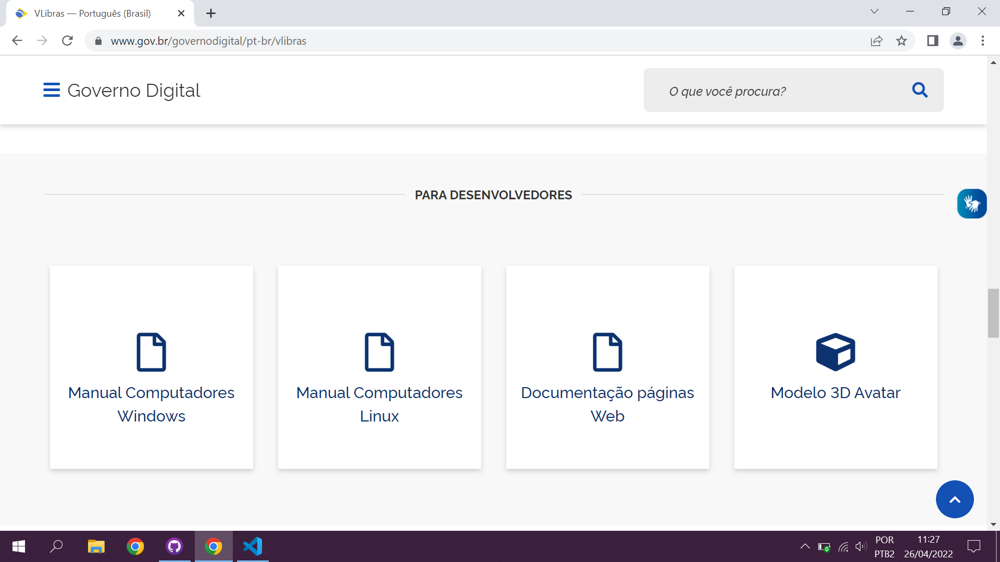
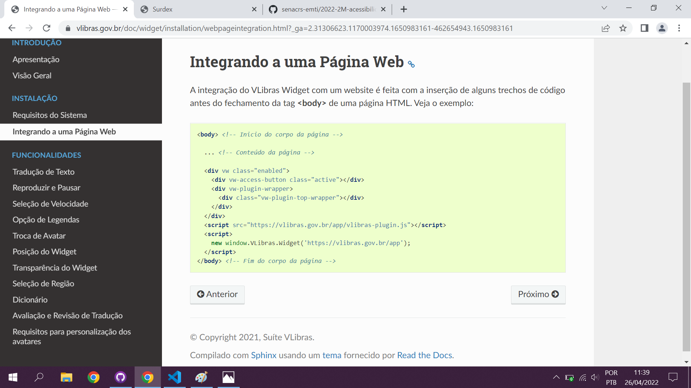
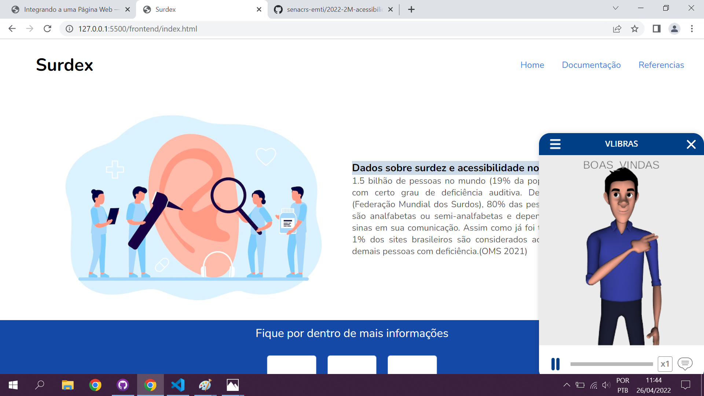

Documentação de Ferramenta
Solução
Com base nas dificuldades que a surdez acaba causando nos seres humanos, realizamos uma exemplificação de como tornar um site acessível para as pessoas com a deficiência nos ouvidos no caso a surdez tendo como objetivo o aproveitamento do público, com base nesses relatos utilizamos o Vlibras que é uma ferramenta de propriedade do governo brasileiro.
Como utilizar a ferramenta Vlibras:
1) Acessar o site do governo https://www.gov.br/governodigital/pt-br/vlibras
2) Navegar na página home e encontrar a parte da home que está escrito para desenvolvedor e vamos clicar em Documentação páginas Web.
3) Após clicar na Documentação páginas web você será redirecionado para uma página que vai exibir o código HTML para você incluir no seu código.
4) Após incrementar no html temos que passar o manual do usuário.
Primeiro contato do usuário com o Vlibras:

O usuário tem que ir aonde está localizada a logo onde tem o símbolo de libras e quando ele clicar em abrir a ferramenta ele deve esperar um tempo curto para que abra a ferramenta, após esperar esse tempo irá abrir a ferramenta como mostra o exemplo abaixo.
O usuário deve selecionar o conteúdo que ele deseja traduzir após isso ele deve clicar em cima do conteúdo e logo após isso conteúdo será traduzido em libras.
Responsáveis Técnicos:Guilherme Barbieri, Lucas Silva, Pedro Petrini, Valmir de Oliveira Filho